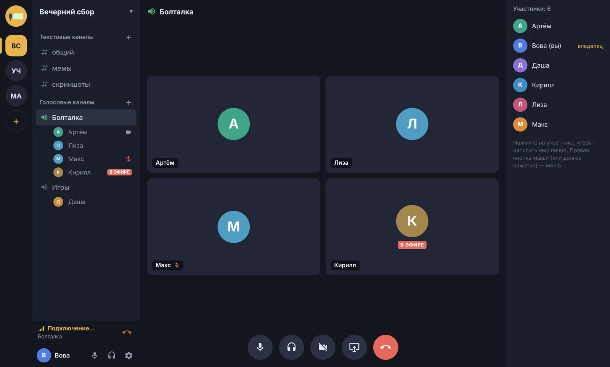
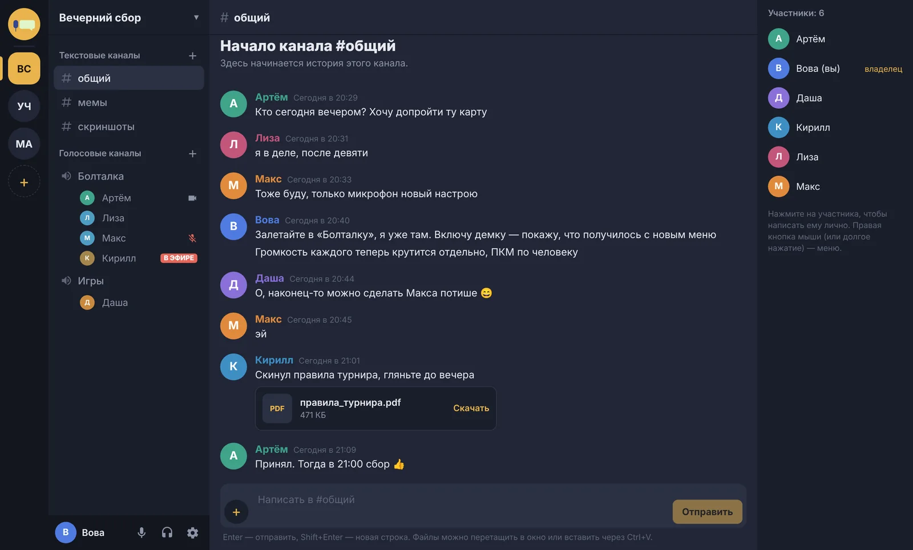
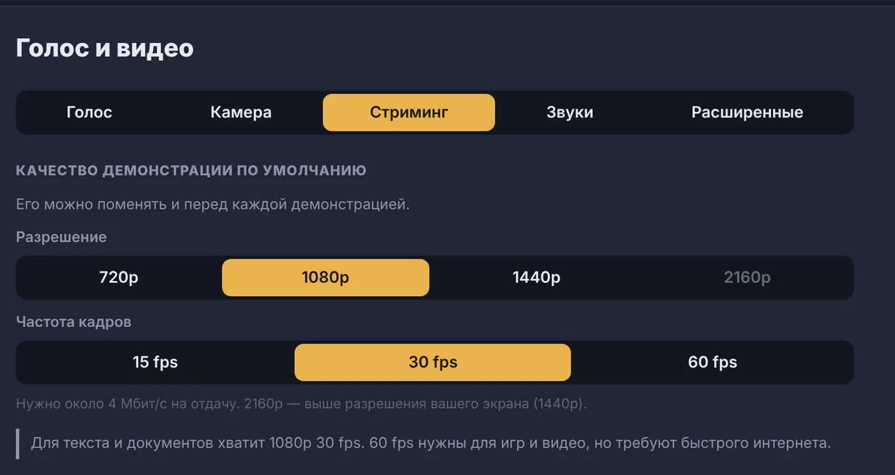
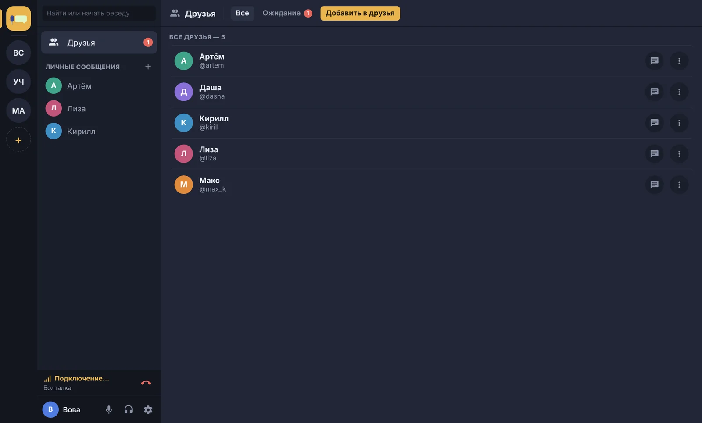
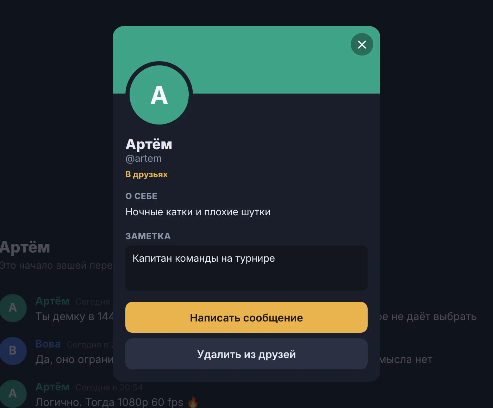

Голосовые каналы
Заходите в канал одним нажатием и сразу видно, кто говорит, у кого включена камера и кто показывает экран. Громкость каждого человека настраивается отдельно, а рация работает по горячей клавише, даже когда вы в игре.

Голосовые каналы, демонстрация экрана со звуком и переписка с файлами. Всё работает на собственном сервере вашей компании.

Заходите в канал одним нажатием и сразу видно, кто говорит, у кого включена камера и кто показывает экран. Громкость каждого человека настраивается отдельно, а рация работает по горячей клавише, даже когда вы в игре.

Весь экран или одно окно, вместе со звуком игры или видео. Разрешение от 720p до 2160p и до 60 кадров в секунду. Выше разрешения вашего монитора выбрать нельзя, а 4K идёт в 30 кадрах, чтобы трансляция не тормозила.

Добавляйте друзей по имени, пишите лично, закрепляйте важные чаты и заглушайте лишние. К любому человеку можно оставить заметку, её видите только вы.

Аватар, имя, цвет и пара слов о себе. Нажмите на собеседника в чате, чтобы открыть его профиль, написать ему или добавить в друзья.

Кнопкой «Скачать» вверху страницы. Файл называется ViVoice-Setup и весит около ста мегабайт.
Если Windows покажет «Система Windows защитила ваш компьютер», нажмите «Подробнее» и «Выполнить в любом случае». Так Windows встречает программы без платной подписи.
Создайте аккаунт или войдите в свой. Новые версии приложение скачает и установит само.